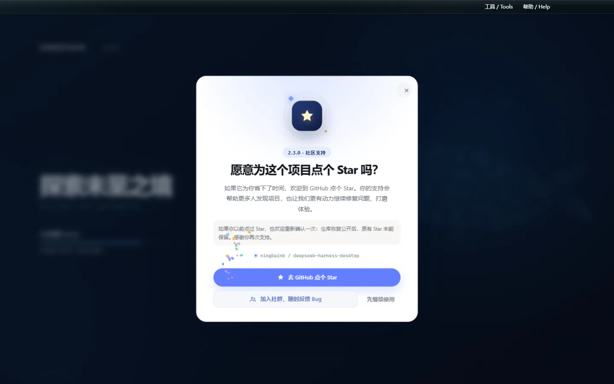
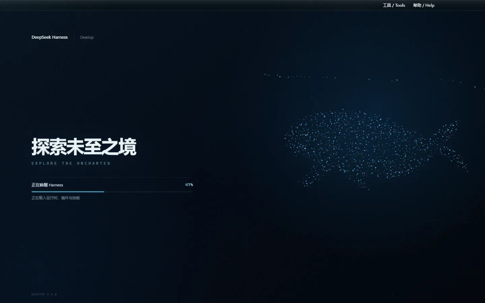
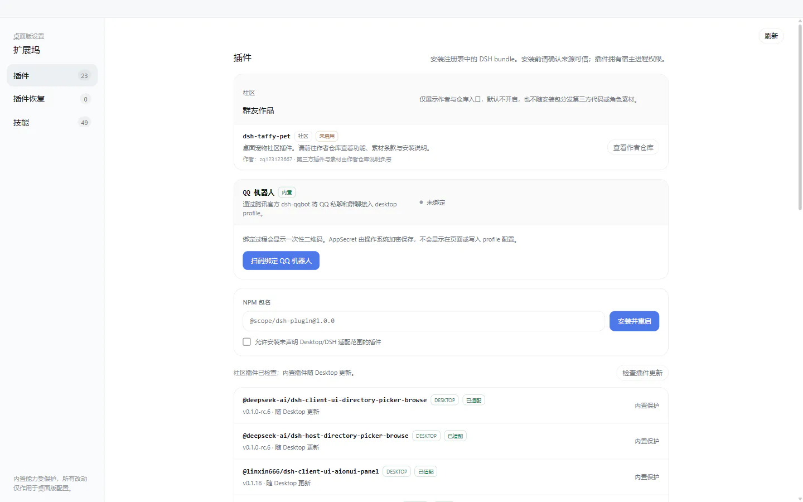

完整 Web Surface
ORIGINAL INTERFACE不是缩水重写。会话、工具调用、模型选择、权限与插件界面保持完整。
DeepSeek Harness Desktop 社区版
社区维护的开源 Windows AI 编程客户端：完整保留 Harness Web Surface，并加入稳定公开契约、受控 Runtime 支持、迁移回滚、插件、Skills、主题、移动远程、QQ Bot 与自动更新。
支持 Windows 10/11 x64，无需另外安装 Node.js；独立 profile 和端口回退允许桌面版与官方 Web 端同时运行。
开源免费 46 Stars 1,537 次累计安装包下载 如果项目有帮助，欢迎点 Star 支持持续更新
原版能力是核心，桌面体验是外壳。所有增强都通过独立 profile 与插件组合完成。
不是缩水重写。会话、工具调用、模型选择、权限与插件界面保持完整。
本地主机启停、崩溃恢复、日志轮转、窗口状态与自动更新统一管理。
任务看板、Git 图谱、远程连接、宠物、统计与主题都可独立启用。
SDK、Desktop Contract、Runtime Provider、Preset、Task/Run/Evidence、插件兼容元数据和 Deep Link 都有可校验的公开版本边界。
STABLE PUBLIC BOUNDARIESStable 只接受有 provider、Desktop 范围、完整性、lockfile 与 patch 证据的 known-good 或 supported matrix 项。
完整 Profile 原样重试后，可用用户已配置的模型在私有事务工作区生成候选；验证通过才应用，失败自动回滚并使用同 Home 内置插件。
VERIFIED TRANSACTIONAL REPAIRStable 是默认频道且拒绝 prerelease；Beta 只在明确选择后接收 prerelease。切换频道从不自动降级。
CHANNELS WITHOUT DOWNGRADES正式 Desktop 只上传固定枚举的使用事件、轮换日/月匿名标识和国家级汇总；不上传 Secret、路径、用户内容或 IP。诊断仍只由用户确认后导出。
ROTATING ACTORS, AGGREGATES ONLY同一 Release 提供 SHA256SUMS 和 release-manifest；manifest 记录每个资产的实际签名状态，而本地构建可能未签名。
HASHES, MANIFEST, SIGNATURE STATE已有 Host Scheduler、受控 Git Worktree 与可审核 Evidence 继续运行；缺少可选能力时保守回退，不伪造隔离或执行状态。
REVIEWABLE EXECUTION STATE保留会话、工具、模型、SSH、移动远程、QQ Bot、插件、Skills、任务看板、宠物和 11 款主题。
COMPLETE HARNESS SURFACE2.3.0 的社区支持引导只展示一次，不请求 GitHub API，也不会把“打开仓库”误报成已经点 Star。用户可以直接进入 QQ 社群反馈问题，或关闭后继续使用。

单击技能库即可搜索本机 Skills，查看来源与描述，并通过鼠标或键盘插入当前对话。

启动界面只保留产品名、加载状态和进度条。粒子鲸鱼在右侧缓慢游动，并自动适配低动态偏好。

扩展坞集中展示内置插件、社区 bundle、本地技能与群友作品入口，默认能力受到保护，第三方扩展保持关闭。

11 款主题完整适配核心界面和桌面插件。先试穿，再应用，浅色与深色状态保持一致。

扫码配对后，在手机上查看工作区、继续会话、切换模型与权限。支持局域网直连与 Cloudflare 公网隧道。


下载 x64 安装包，应用会自动检查后续更新。
$DeepSeek Harness Desktop v3.0.5下载
克隆完整项目，安装依赖后打包 Windows 桌面应用。
v3.0.5 直接读取当前 Home、对话、Session、设置和全部插件。完整启动失败会自动重试，并在可修复时运行有界模型修复；候选验证失败会回滚，最终使用同 Home 内置插件，不再要求用户选择迁移、隔离或安全模式。
它是社区维护的开源 Windows 桌面发行版，在原版 Harness Web Surface 外增加原生应用生命周期、插件、主题、自动更新与移动远程能力。
不需要。Windows x64 安装包已经包含运行所需组件，下载并安装后即可启动。
是。安装包可以免费下载，源代码托管在 GitHub，并采用 BSD-3-Clause 许可证。
当前提供 Windows 10 和 Windows 11 的 x64 安装包。
不是。它是社区维护的开源桌面发行版，启动官方 @deepseek-ai/dsh 本地主机；DeepSeek Harness 与相关标识归各自权利人所有。
可以。桌面版使用隔离的 profiles/desktop profile；首选端口被占用时会自动选择可用端口，不覆盖官方 Web 端配置。
从同一 GitHub Release 下载 SHA256SUMS.txt 和 release-manifest.json。先比对安装包 SHA-256，再查看 manifest 记录的实际签名状态；本地或源码构建可能未签名，不能据此推断发布资产状态。